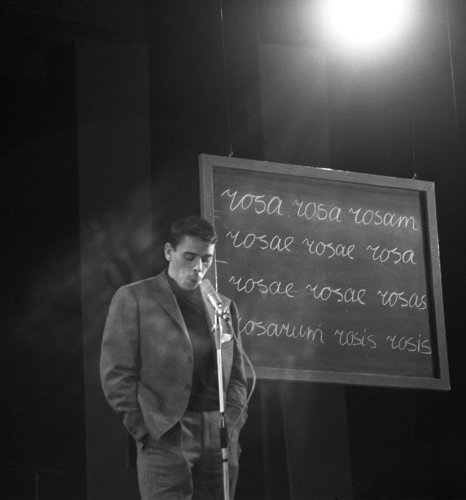
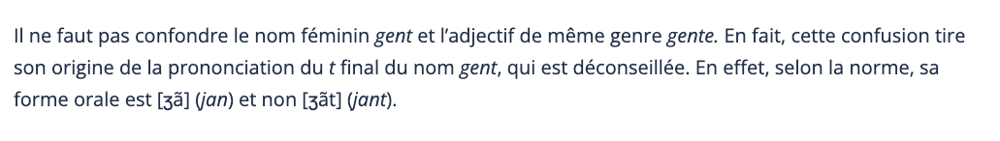
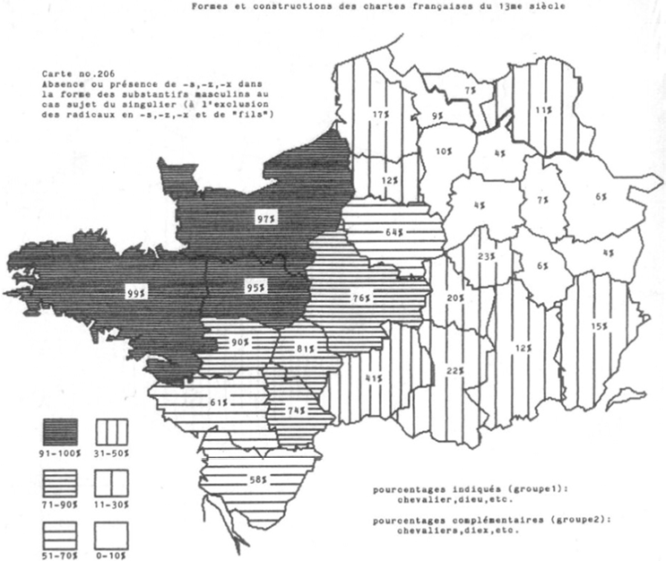
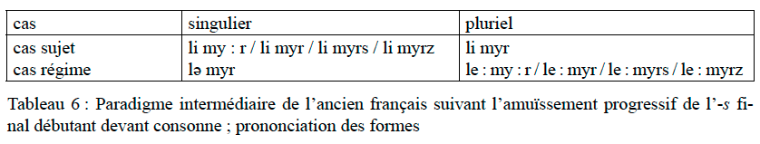
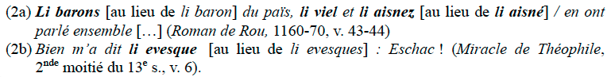
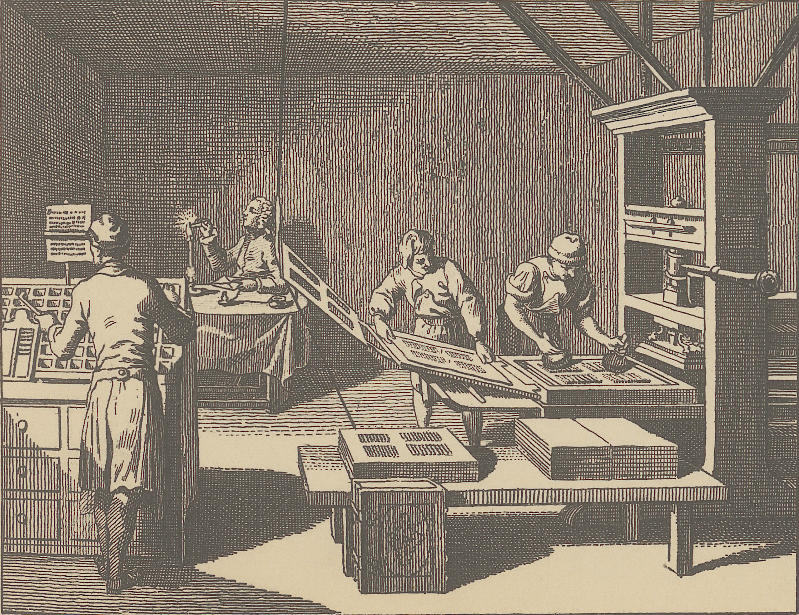
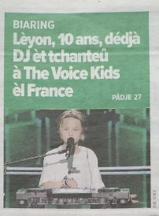

5.1 Évolutions morpho-syntaxiques
5.2 Évaluation
La note finale (/20) est calculée ainsi : présentation (/5) + examen (/15).
5.2.0.1 Présentation orale (25 % / 5 points)
Groupe de deux - 20 minutes avec Power
PointLes présentations ont lieu sur deux séances :
Mardi 8 décembre : 3 présentations.
Mardi 16 décembre : 4 présentations.
5.2.0.1.1 Grille d’évaluation de la présentation (/5) :
Analyse linguistique correcte de la variété présentée : /2
Cadre théorique et historico-géographique
Terminologie
Littérature scientifique
Les traits principaux de cette variété sont présentés
Exemples linguistiques : /1,5
- Illustration adéquate des phénomènes présentés
Présentation : /1,5
Expression orale adéquate
Clarté et précision de la présentation
5.3 L’évolution des formes nominales
5.3.1 Du latin au très ancien français
- Identification des parties du discours :
- S’effectue par l’inventaire de leurs catégories grammaticales.
- Pour les noms :
- Nombre
- Genre
- Cas
- ‼️ Fonctionne ainsi jusqu’au moyen français (MF)
5.3.1.1 Le latin classique
- Le nom se distingue des adjectifs, pronoms et déterminants parce que son genre est fixe (ex. un nom est soit intrinsèquement masculin, féminin ou neutre).
- L’expression des trois catégories (genre, nombre, cas) est souvent confondue dans un seul et unique morphème.
- Un même morphème cumule plusieurs informations catégorielles simultanément.
- C’est la caractéristique d’une langue indo-européenne de type flexionnel (ou synthétique).
Le système nominal en latin classique repose sur l’association de trois catégories grammaticales réparties à travers cinq modèles de déclinaison :
- Deux nombres :
- Singulier
- Pluriel
- Trois genres :
- Masculin
- Féminin
- Neutre
- Six cas :
- Nominatif (Sujet, attribut du sujet)
- Vocatif (Apostrophe, interpellation)
- Accusatif (Objet direct, direction)
- Génitif (Complément du nom, possession)
- Datif (Objet indirect, destinataire)
- Ablatif (Compléments circonstanciels : moyen, lieu, cause…)
- Cinq déclinaisons

5.3.1.2 Évolutions du latin vulgaire
- Le latin vulgaire réduit le nombre des cas, tant pour la déclinaison du nom que pour celle de l’adjectif
- la déclinaison des pronoms sera plus résistante
- Les particularités de la prononciation du latin vulgaire ont en effet des conséquences importantes dans le domaine de la déclinaison nominale :
- causam (acc. sing) se prononce en latin vulgaire comme le latin classique causă (nom. sing) et causā (abl. sing.)
- murum (acc. sing.) se prononce comme murō (dat./abl. sing.)
- Il en est résulté qu’au Ve siècle, le latin vulgaire ne connaissait plus qu’une déclinaison bicasuelle, c’est-à-dire une déclinaison réduite à deux cas pour l’ensemble des noms et adjectifs :
- le nominatif
- l’accusatif.
- Cela a pour conséquence que le latin vulgaire tend à utiliser davantage les prépositions pour signifier les relations syntaxiques entre mots.
- En passant du latin classique au latin vulgaire :
- Le Nominatif absorbe les fonctions du Vocatif → Forme la base du Cas Sujet (CS).
- L’Accusatif absorbe les fonctions du Génitif, du Datif et de l’Ablatif (à l’aide de prépositions comme de ou ad/a) → Forme la base du Cas Régime (CR).
5.3.1.2.1 Repérage des traits du passage au latin vulgaire (Prépositions)
- Latin classique : Iacobus patri librum dat
- Latin vulgaire : Jacomos levro a ppatre donat
- Latin classique : Iacobus mihi librum patris dat
- Latin vulgaire : Jacomos me levro de patre donat

Correctif
- Datif → Accusatif prépositionnel (a)
- patri = Datif (complément d’objet indirect / destinataire).
- a ppatre = Accusatif précédé de la préposition a/ad (ancêtre du à français).
- Génitif → Accusatif prépositionnel (de)
- patris = Génitif (complément du nom / possession).
- de patre = Accusatif précédé de la préposition de (ancêtre du de français).
5.3.1.3 Très ancien français
La déclinaison nominale bicasuelle est clairement attestée dans les Serments de Strasbourg, où Deus, Lodhuuigs, Karlus s’opposent à Deo, Loduuuig, Karlo/Karle :
Pro Deo amour et pro christian poblo et nostre commun saluament, dist di in avant, in quant Deus sauir et podir me dunat, si saluarai eo cist meon fradre Karlo et in aiudha et in cadhuna cosa, si cum om per dreit son fradra saluar dift, in o quid il mi altresi fazet. Et ab Ludher nul plaid nunqua’m prindrai qui, meon uol, cist meon fradre Karle in damno sit.
Si Lodhuuigs sagrament que son fradre Karlo iurat conseruat, et Karlus, meos sendra, de suo part non lo’s tanit, si io returnar non l’int pois, ne io ne neuls cui eo returnar int pois, in nulla aiudha contra Loduuuig nun li iu er.
- Afin de rendre la présentation aussi simple que possible, quatre classes nominales de base sont présentées
- Classe 1 : Noms, adjectifs et participes masculins du type mur(s) / bon(s)
- Classe 2 : Noms, adjectifs et participes féminins du type fille(s) / bone(s)
- Classe 3 : Noms, adjectifs et participes féminins se terminant par une consonne du type flor(s) / grant (granz)
- Classe 4 : Noms et adjectifs à deux radicaux du type sire / mieudre
5.3.1.3.1 Classe 1
Noms issus de parisyllabiques masculins latins :
- L’essentiel des noms et adjectifs masculins de l’AF.
- Formes parisyllabiques : formes ayant le même nombre de syllabes pour les deux formes casuelles.
- Contrairement aux formes imparisyllabiques.
Classe 1 : paradigme
| Forme latine (Singulier) | Forme latine (Pluriel) | Cas | Ancien français (Singulier) | Ancien français (Pluriel) |
|---|---|---|---|---|
| murus | muri | Cas Sujet | (li) murs | (li) mur |
| muru(m) | muros | Cas Régime | (le) mur | (les) murs |
Sous-classe des masculins parisyllabiques :
- Particularité de l’étymon latin : Noms et adjectifs dont le nominatif singulier ne comporte pas de
-sfinal (ex. latin magister, asper). - Formes en ancien français : Évolution vers maistre(s), aspre(s).
- Apparition d’un
-sanalogique : Au Cas Sujet Singulier (CSS), ces formes reçoivent un-spar analogie avec le modèle général des masculins.- Aire de conservation : Phénomène observé dans les dialectes qui conservent la déclinaison bicasuelle.
Sous-classe : paradigme
| Forme latine (Singulier) | Forme latine (Pluriel) | Cas | Ancien français (Singulier) | Ancien français (Pluriel) |
|---|---|---|---|---|
| magister ?? | magistri | Cas Sujet (CS) | (li) maistre(s) | (li) maistre |
| magistru(m) | magistros | Cas Régime (CR) | (le) maistre | (les) maistres |
5.3.1.3.2 Classe 2
- La classe la plus importante des noms féminin, référant à des animés et des inanimés.
- Abandon de la déclinaison casuelle, non seulement au singulier, où les formes se confondaient déjà en latin tardif…
- Mais aussi au pluriel, où les formes auraient pu conserver une déclinaison casuelle à l’aide de la présence / absence de l’-s final. Néanmoins, aucune forme du féminin de cette classe ne garde de trace de déclinaison.
Classe 2 : paradigme
| Forme latine (Singulier) | Forme latine (Pluriel) | Cas | Ancien français (Singulier) | Ancien français (Pluriel) |
|---|---|---|---|---|
| femina | feminae -> feminas | Cas Sujet (CS) | (la) feme | (les) femes |
| femina(m) | feminas | Cas Régime (CR) | (la) feme | (les) femes |
5.3.1.3.3 Classe 3
- De noms et adjectifs féminins qui se terminent en AF par une consonne : la classe 3.
- Les noms réfèrent avant tout à des inanimés comme
- flors / flor, maisons / maison, mers / mer,
- ou à des notions abstraites comme
- citez / cité, vertuz / vertu.
- L’étymon latin appartient généralement à la troisième déclinaison latine.
- Le paradigme est devenu parisyllabique dès les premiers textes en français.
- Il s’agit sans doute d’une régularisation analogique sur le paradigme masculin, dans la mesure où ces CS analogiques existent en particulier dans les dialectes qui conservent la déclinaison.
Classe 3 : paradigme
| Forme latine (Singulier) | Forme latine (Pluriel) | Cas | Ancien français (Singulier) | Ancien français (Pluriel) |
|---|---|---|---|---|
| gens -> gentis | gentes | Cas Sujet (CS) | (la) gen(z) | (les) gens /genz |
| gente(m) | gentes | Cas Régime (CR) | (la) gent | (les) gens /genz |

5.3.1.3.4 Classe 4
- Il existe un certain nombre de sous-classes comprenant non seulement des formes du masculin, mais aussi du féminin.
- Les noms réfèrent essentiellement à des animés, surtout à des humains.
- Le cas sujet pluriel des masculins des diverses sous-classes s’aligne sur celui des masculins parisyllabiques.
Classe 4 : paradigme (masculin)
| Forme latine (Singulier) | Forme latine (Pluriel) | Cas | Ancien français (Singulier) | Ancien français (Pluriel) |
|---|---|---|---|---|
| latro | latroni | Cas Sujet (CS) | (li) lerre(s) | (li) larron |
| latrone(m) | latrones | Cas Régime (CR) | (le) larron | (les) larrons |
- Le cas sujet féminin conserve l’absence étymologique de distinction casuelle au pluriel, caractéristique de tous les noms (et adjectifs) féminins.
- Par contre, le cas sujet singulier féminin garde la possibilité de se distinguer à l’aide de l’-s final.
Classe 4 : paradigme (féminin)
| Forme latine (Singulier) | Forme latine (Pluriel) | Cas | Ancien français (Singulier) | Ancien français (Pluriel) |
|---|---|---|---|---|
| soror | sorores | Cas Sujet (CS) | (la) suer(s) | (les) serors |
| sorore(m) | sorores | Cas Régime (CR) | (la) soror | (les) serors |
5.3.1.3.4.1 Exercice 1 : identifier le cas
Pour chaque mot en gras, indiquez le cas (CS ou CR) et le nombre (singulier ou pluriel). Justifiez.
| # | Extrait | Cas | Nombre | Justification |
|---|---|---|---|---|
| 1 | Sa suer est d’une chambre issue (Wace, Brut, v. 14273) ‘Sa sœur est sortie d’une chambre’ |
CS | sing. | Sujet de est issue ; classe 4, forme sujet suer (CR seror) |
| 2 | Tristran s’en torne avoc son mestre. (Béroul, Tristan, v. 2451) ‘Tristan s’en va avec son maître d’armes’ |
CR | sing. | Complément de la préposition avoc ; classe 1, sans -s |
| 3 | …la est remés la genz menue (Eneas, v. 3193) ‘là sont restées les petites gens’ |
CS | sing. | Sujet de est remés (verbe et article au singulier) ; classe 3, -z analogique |
| 4 | Turnat sa teste vers la paiene gent (Roland, v. 2360) ‘Il tourna sa tête vers les païens’ |
CR | sing. | Complément de la préposition vers ; classe 3, sans -s |
| 5 | …trois faees serors la firent (Eneas, v. 4015) ‘Trois fées sœurs la firent’ |
CS | plur. | Sujet de firent ; classe 4, radical du régime + -s |
| 6 | …une fame estoit dame de tot lo regne. (Eneas, v. 553) ‘Une femme régnait sur tout le pays’ |
CS | sing. | Sujet de estoit ; classe 2, pas de distinction casuelle |
| 7 | Mot ot li mestre Tristran chier (Béroul, Tristan, v. 971) ‘Son maître d’armes avait beaucoup d’affection pour Tristan’ |
CS | sing. | Sujet de ot (verbe au singulier, article sujet li) ; classe 1 sans -s (lat. magister) |
5.3.1.3.4.2 Exercice 2 : écrire en ancien français
Complétez avec la bonne forme du nom entre crochets, puis indiquez le cas et le nombre.
| # | Extrait | Forme | Cas et nombre | Justification |
|---|---|---|---|---|
| 1 | …cil qui de ce furent _____ les ont d’erbe fresche jonchiez. [mestre] (Renart leaks/Dole, v. 337) ‘ceux qui étaient chargés (maîtres) de préparer des lieux les ont jonchés d’herbe fraîche’ |
me/aistre | CS plur. | Attribut du sujet pluriel cil ; CS pluriel sans -s |
| 2 | …par le conseil de ses granz _____ [mestre] (Renart Dole, v. 2840) ‘sur le conseil de ses grands maîtres’ |
me/aistres | CR plur. | Complément du nom conseil (après de) ; CR pluriel en -s |
| 3 | Ad une voiz crient la _____ menude [gent] (St Alexis, v. 531) ‘Les petites gens crient d’une même voix’ |
gent/z | CS sing. | Sujet de crient (collectif) ; forme étymologique sans -s |
| 4 | …anviron lui vienent ses _____ [gent] (Eneas, v. 5922) ‘Ses gens viennent autour de lui’ |
genz | CS plur. | Sujet de vienent ; pluriel en -z |
| 5 | Se puis veeir ma gente _____ Alde [suer] (Roland, v. 1720) ‘Si je peux voir ma sœur Aude’ |
sorur | CR sing. | COD de veeir ; radical du régime, pas suer |
| 6 | …il parolent des deus _____ [suer] (Chrétien de Troyes, Yvain, v. 6158) ‘Ils parlent des deux sœurs’ |
serors | CR plur. | Complément prépositionnel (des = de + les) ; radical du régime + -s |
| 7 | Ne reverrunt lor meres ne lor _____ [feme] (Roland, v. 1402) ‘Ils ne reverront ni leurs mères, ni leurs femmes’ |
femmes | CR plur. | COD de reverrunt ; classe 2, pluriel en -s |
5.3.1.4 Le Genre
- Des trois genres latins, les langues romanes conservent le masculin et le féminin, en gardant quelques vestiges du neutre.
- En principe, les noms français conservent le genre étymologique, sauf le neutre, mais il se produit des changements :
- Les noms abstraits imparisyllabiques masculins en -or deviennent des parisyllabiques féminins :
- calor → caloris > chaleur(s) ; dolor → doloris > douleur(s)
- contrairement à l’espagnol qué calor (masculin) ou à l’italien che calore (masculin)
- Les noms d’arbres étaient féminins en latin et sont tous devenus masculins :
- fraxinus > (le) fresne ; pinus > (le) pin
- Les noms neutres du latin sont pour la plus grande majorité réanalysés comme masculins, du fait que la forme du singulier neutre latin ressemble au masculin accusatif singulier latin :
- argentum → (li) argenz / (le) argent ;
- aurum → (li) ors / (le) or ;
- cornu → (li) corz / (le) cor(n) ;
- velum → (li) voils / (le) voil ;
- vinum → (li) vins / (le) vin
- Au pluriel, les neutres latins se terminent en -a, ce qui les rend similaires à la forme du singulier nominatif de la plus grande classe des féminins, la classe 2.
- Par analogie, un certain nombre de noms neutres pluriels en -a ont été réanalysés comme des féminins singuliers :
- arma → (la) arme ; corn(u)a → (la) corne ; festa → (la) feste ; folia → (la) feuille (avec un sens parfois collectif : le feuillage) ; labra → (la) lèvre ; opera → (la) oeuvre ; vela → (la) voile.
- Ainsi, dans certains cas, deux noms français proviennent du même neutre latin, un nom masculin dérivé du singulier, et un nom féminin du pluriel. Ceci vaut par exemple pour les paires suivantes :
- grain – graine ;
- tourment – tourmente ;
- vaisseau – vaisselle.
- Remarque comparative (italien) : il labbro / le labbra ; il velo / le vela ; foglio / fogli vs foglia / foglie.
- Les noms abstraits imparisyllabiques masculins en -or deviennent des parisyllabiques féminins :
- Vestiges du genre neutre latin :
- Bien que le genre neutre ait disparu en tant que catégorie globale au profit du masculin et du féminin, des traces subsistent en ancien français :
- Formes obliques et expressions figées :
- Noms de jours : Issus du génitif singulier latin, ex. lunae dies > lundi.
- Noms de fêtes : Issus du génitif pluriel, ex. [festa] candelorum > Chandelour / Chandeleur.
- Formes obliques et expressions figées :
- Bien que le genre neutre ait disparu en tant que catégorie globale au profit du masculin et du féminin, des traces subsistent en ancien français :
5.3.2 Le déclin de la déclinaison bicasuelle : l’ancien français (12ᵉ–13ᵉ s.)
5.3.2.1 Un système en mouvement
- Pour un lecteur peu familiarisé, l’ancien français est souvent déroutant :
- Absence de standardisation : grande variation formelle et orthographique, parfois au sein d’un même texte.
- Évolution à rythme variable : les changements progressent à des vitesses différentes selon le genre textuel et les variables diasystématiques (géographie, registre, groupe social).
- La variation des formes nominales a deux sources :
- La transmission des textes : juxtaposition de formes de périodes et de dialectes différents.
- Le processus de réduction de la déclinaison bicasuelle, en cours pendant toute la période.
- ➡️ Dans un même texte, on trouve des formes qui respectent la déclinaison et d’autres qui ne la respectent pas.
5.3.2.2 Où ? Une désintégration d’ouest en est
- Ouest (anglo-normand, normand) : désintégration visible dès les tout premiers textes.
- Nord et Est (Picardie, Wallonie, Lorraine, Bourgogne) : la déclinaison se maintient jusqu’au moyen français.

5.3.2.3 Quand ? Chronologie
- XIIᵉ siècle : système de déclinaison globalement stable dans les textes.
- Premières réductions au seul cas régime dans la zone ouest du domaine d’oïl (surtout l’anglo-normand).
- XIIIᵉ siècle : image plus hésitante, premiers signes nets de l’abandon de la déclinaison.
- Progression géographique :
- Ouest (anglo-normand)
- Domaine central (de la Normandie aux portes de Paris)
- Domaines champenois et picard
5.3.2.4 Quel cas l’emporte ?
- Au cours de la désintégration, c’est généralement la forme du cas régime (CR) qui remplace celle du cas sujet (CS), plus rarement l’inverse.
- Il ne s’agit pas d’un emploi aléatoire des formes, mais d’un processus progressant de façon prévisible.
- À votre avis, pourquoi est-ce le cas régime qui l’emporte ?
- À votre avis, pourquoi la déclinaison disparaît-elle ?
5.3.2.5 Réponse : le poids des fonctions
- Les fonctions du cas sujet sont limitées :
- sujet (quand il est exprimé)
- attribut du sujet
- apposition au sujet
- parfois l’apostrophe
- Le cas régime couvre toutes les autres fonctions (il cumule l’héritage de quatre cas latins).
- ➡️ Les formes du cas sujet ne représentent qu’entre un tiers et un dixième des formes nominales.
- La réunion de plusieurs fonctions sous la seule forme du cas régime est attestée notamment par la Séquence de sainte Eulalie, où Deo est tantôt un complément du nom, tantôt un objet :
- Uoldrent la ueintre li Deo inimi (v. 3) Les ennemis de Dieu voulurent la vaincre
- Qu’elle Deo raniet chi maent sus en ciel (v. 6) Qui veulent qu’elle renie Dieu qui demeure au ciel
- La polle sempre non amast lo Deo menestier (v. 10) Cette fille à ce qu’elle n’aimât toujours le service de Dieu
5.3.2.6 Pourquoi la déclinaison disparaît-elle ? |
5.3.2.7 Le rôle du contexte syntaxique
- Une même forme peut correspondre à plusieurs valeurs :
- mur : singulier cas régime ou pluriel cas sujet
- bel : masculin singulier cas régime ou masculin pluriel cas sujet
- C’est le contexte (notamment la présence et la forme de l’article) qui permet de désambiguïser.
- Pourtant, à l’origine, en ancien français comme en latin, chaque forme porte sa propre marque flexionnelle.
5.3.2.8 Un système devenu opaque
- Deux changements, pas forcément liés, rendent le système opaque :
- la désintégration du système casuel ;
- l’amuïssement progressif du -s final.
- L’amuïssement se répand irrégulièrement selon les dialectes : il commence au 11ᵉ s. et aboutit au 16ᵉ s. (Schøsler 1984, section 9.3).
- Une forme écrite murs se réalise d’au moins quatre façons : [myrs] / [myrz] / [myːr] / [myr]
- -s sourd, -s sonore en liaison, allongement compensatoire ou rien du tout.
- Le principe « une forme – une fonction » n’est plus respecté : ni le cas ni le nombre ne sont clairement distingués.

5.3.2.9 Les déterminants prennent le relais
- Seuls les déterminants masculins gardent au cas sujet une distinction casuelle claire, au détriment du nombre (li = singulier et pluriel).
- La déclinaison des déterminants reste en vigueur plus longtemps que la déclinaison nominale (Schøsler 1984, chap. 8 et 9).
- ➡️ Signe que les déterminants sont en train de devenir la tête du groupe, porteuse des marques flexionnelles.

5.3.2.10 La variation selon l’usage
5.3.2.10.1 Variation diastratique (sociale)
- Étude des chartes luxembourgeoises (dialecte de l’Est, conservateur pour la déclinaison).
- L’usage casuel varie selon le niveau social du destinataire :
- pour les chartes destinées à la chancellerie royale, le scribe se conforme à l’usage de Saint-Denis (dialecte du Centre), qui ne respecte plus la déclinaison.

5.3.2.10.2 Variation diaphasique (genre textuel)
- La déclinaison se perd d’abord dans les textes en prose, ensuite dans les textes en vers.
- ⚠️ Difficulté : le temps et l’espace interfèrent, faute de textes réellement comparables.
5.3.2.10.3 Variation diamésique (oral représenté vs narration)
- Un seul texte permet de le montrer : Aucassin et Nicolette (13ᵉ s.).
- Parties en vers et en prose, parties narratives et parties d’« oral représenté », toutes d’un même auteur.
- La désintégration apparaît plus tôt :
- dans l’oral représenté en prose que dans la narration en prose ;
- dans l’oral représenté en vers que dans la narration en vers.
5.3.3 Le moyen français et le français préclassique (14ᵉ – fin 16ᵉ s.)
5.3.3.1 Contexte
- Le statut du français change profondément :
- forte influence des langues classiques et de l’italien ;
- dès le 16ᵉ s., auteurs et grammairiens veulent hisser le français au rang des langues de prestige (latin, italien) en fixant ses règles.
- L’imprimerie diffuse les textes en plus grand nombre et transmet des variétés plus « standardisées », réduisant la variation diatopique.
- L’influence des langues classiques et modernes touche surtout la graphie, moins la morphologie.

5.3.3.2 Trois grands changements
- L’abandon de la déclinaison casuelle
- Les réorganisations analogiques, en particulier des formes du féminin
- L’établissement du groupe nominal
- N.B. Ces trois processus commencent dès les premiers textes français, mais n’aboutissent qu’à la fin du 16ᵉ s.
5.3.3.3 1. L’abandon de la déclinaison : trois cas de figure
5.3.3.3.1 a. On garde le cas régime (règle générale)
- Le cas régime est infiniment plus sollicité que le cas sujet : il cumule les fonctions de quatre anciens cas latins.
- C’est l’aboutissement d’un processus long de trois siècles.
5.3.3.3.2 b. On garde le cas sujet (exceptions)
- Au XVᵉ s., le cas sujet ne survit plus que pour quelques noms :
- dont l’opposition casuelle reposait sur une alternance de radical ;
- et qui étaient plus fréquents au cas sujet qu’au cas régime.
- Il s’agit surtout de noms de personnes, souvent employés comme termes d’adresse :
- pâtre, peintre, sœur, Hugues, Pierre…
5.3.3.3.3 c. On garde les deux formes, avec des sens différents
- Les deux anciennes formes casuelles deviennent deux mots distincts : chantre / chanteur ; copain / compagnon ; gars / garçon ; pute / putain ; sire / seigneur.
- Différenciation sémantique :
- pastre (CS) / pasteur (CR) → pâtre (gardien de troupeaux) / pasteur (gardien des âmes)
- copain (CS) / compagnon (CR) → personne qu’on apprécie / personne avec qui on partage une activité
- gars (CS) / garçon (CR) → homme (registre familier) / enfant de sexe masculin
- Différenciation fonctionnelle :
- on (CS) / homme (CR) → pronom / nom
- // ndls. men
5.3.3.4 2. Les réorganisations analogiques
5.3.3.4.1 Singulier et pluriel
- Au XVIᵉ s., après quelques tâtonnements, on reconstruit des paires singulier / pluriel homogènes :
- chastel / chasteaux → chasteau / chasteaux (durable)
- animal / animaux → animau / animaux → animal / animaux (transitoire)
5.3.3.4.2 Les adjectifs épicènes
- Les adjectifs épicènes du type fort, grant s’alignent sur le modèle bon / bone :
- formes analogiques forte, grande, avec distinction claire du genre ;
- grant et fort au féminin dominent encore au 15ᵉ s., puis disparaissent au profit de grande et forte au 17ᵉ s.
- Adverbes en -ment : alignement parallèle
- granment, forment, briément → grandement, fortement, brièvement
5.3.3.4.3 Genre ou cas ? L’exemple de tel
- Tel, épicène en ancien français, montre une opposition dialectale nette :
- Ouest et Centre — renforcement du genre : fréquence élevée des féminins analogiques en -e ; la déclinaison y est en cours d’abandon.
- Est et Nord — renforcement du cas : prédominance des formes marquant le cas par -s ; le système CS / CR s’y maintient, aux dépens de la marque de genre.
5.3.3.4.4 Une analogie en sens inverse
- Parfois, c’est le masculin qui est refait sur le féminin, par suppression du -e final d’une forme historiquement invariable :
- Durable : public (tiré de publique)
- éphémères (latin -ilis) : agil, difficil, docil, facil, fertil, inutil, subtil… qui n’ont pas survécu.
5.3.3.4.5 Le participe présent : deux tendances contradictoires
- Généralisation de l’accord en genre et en nombre, qui gagne même le gérondif (confusion entre les deux) :
- « Les voix non encore voix, bramantes en tous lieux » (D’Aubigné, Tragiques VI, 1620)
- Invariabilité :
- « larme de gomme en ambre durcissant » (Marot, Le second livre de la Méthamorphose d’Ovide, 1556)
5.3.3.4.6 Les suffixes : -eur / -euse
- Depuis le moyen français, -eur se prononce comme -eux (/r/ final amuï).
- On l’associe donc à un féminin en -euse plutôt qu’au féminin étymologique en -eresse :
- chanteur [ʃɑ̃tø] → chanteuse [ʃɑ̃tøz], sur le modèle amoureux [amurø] → amoureuse [amurøz]
- au lieu de chanteur [ʃɑ̃tœr] → chanteresse [ʃɑ̃tœrɛs]
- Au rétablissement du /r/, ces féminins refaits concurrencent, voire évincent, les féminins étymologiques.
- Survivances : pécheur / pécheresse, vengeur / vengeresse
- Le type danseur / danseuse tend à s’imposer en FMod.
5.3.3.5 3. L’établissement du groupe nominal
- Les articles, d’emploi sporadique jusque-là, s’installent progressivement ; au XVIᵉ s., seules quelques hésitations touchent encore l’article partitif.
- En remplaçant les marques flexionnelles par des prépositions et des articles, le français passe d’une langue à dominante flexionnelle à une langue à dominante syntaxique.
- La place devant le nom étant de plus en plus occupée par l’article, l’adjectif qualificatif tend à se postposer (on disait aussi bien la Rouge Mer que la Mer Rouge).
5.3.3.5.1 Du dependent-marking au head-marking
- Latin et très ancien français : chaque élément du groupe porte ses marques de cas, de genre et de nombre (dependent-marking) ; la notion même de « groupe nominal » au sens moderne pose question.
- Évolution : le français devient analytique et configurationnel ; le déterminant devient le porteur principal du genre et du nombre (prédétermination).
- Transition : fin de l’ancien français – début du moyen français ;
- plus tôt dans les dialectes de l’Ouest, plus tard à l’Est et au Nord-Est.
5.3.3.5.2 La généralisation des déterminants en chiffres
- Comparaison des traductions de Cicéron par Jean d’Antioche (XIIIᵉ s.) et par Bornecque (FMod) :
- XIIIᵉ s. : environ 1/3 des groupes nominaux sans déterminant exprimé ;
- FMod : le nombre de déterminants exprimés a doublé.
5.3.4 La période classique (17ᵉ et 18ᵉ s.)
5.3.4.1 Deux mouvements contrastés
- Standardisation : les grammairiens éliminent les formes anciennes (diachronie) et dialectales (diatopie).
- Variation : les écrits de l’époque montrent la persistance de variations liées au style et au canal (diaphasie / diamésie).
5.3.4.2 Des changements morphologiques limités
- L’article es (enclise de en les) sort de l’usage au profit de dans les
- l’article ou (enclise de en le) est réinterprété en au (< a le).
- La forme ça, réduction de cela, apparaît.
- Les relatifs du paradigme lequel, très nombreux en MF, reculent au profit du paradigme hérité du latin (qui, que, quoi, dont, où).
- Le pronom on commence à concurrencer nous.

5.3.4.3 Le genre du nom
- Selon les grammairiens, les femmes choisiraient le féminin pour des noms que les hommes emploient au masculin (genre retenu en FMod, sauf pour étude) :
- âge, caramel, couple, étude, ouvrage, poison
5.3.4.4 La variation
5.3.4.4.1 Diaphasie
- Les innovations syntaxiques apparaissent d’abord dans les genres de la communication de proximité.
- Selon Caron (1992b), les « fautes » relevées dans l’écriture de la noblesse vers 1680 sont des faits naguère acceptables, qui deviennent archaïques à mesure que s’impose la variété défendue par Vaugelas.
5.3.4.4.2 Diamésie
- Vaugelas reconnaît que certaines règles sont respectées à l’écrit mais pas à l’oral : elles sont imposées « d’en haut ».
Il y a fort peu que l’on commence à practiquer cette reigle […], car ny Amyot, ny mesmes le Cardinal du Perron, ny M. Coiffeteau, ne l’ont jamais observée. Certes en parlant on ne l’obserue point, mais le stile veut estre plus exact. — Vaugelas 1647 : 80

5.3.5 Le français moderne (FMod)
5.3.5.1 La féminisation des noms de fonctions
- Académie française : position traditionnellement conservatrice ; plusieurs déclarations dénoncent la féminisation systématique des noms de métiers et de fonctions comme un contresens linguistique.
- Canada francophone : presque tous les titres et fonctions peuvent être féminisés :
- mairesse, maîtresse de poste, députée, associée, chargée de projet, générale, consule, écrivaine, chirurgienne, informaticienne, bouchère, plombière, greffière, chercheuse, ingénieure, gouverneure, professeure, assureure, réviseure, superviseure, procureure, docteure
5.3.5.2 Le renouvellement du vocabulaire
- Langue standard : la siglaison (SNCF, CNRS) depuis le début du XXᵉ s.
- Langue parlée, parlers jeunes, « français avancé » :
- Troncation : biz (bizness), leur (contrôleur)
- Réduplication : leurleur (contrôleur)
- Métaphore : galère
- Métonymie : casquette (contrôleur)
- Verlan : beur (arabe), meuf (femme), céfran (français), babtou (toubab), reubeu (beur)
5.3.5.3 Implications typologiques
- À l’écrit, les catégories nominales restent marquées par une flexion en fin de mot.
- Mais la tendance générale est à l’antéposition des marques :
- dans le groupe nominal (déterminants) ;
- dans le groupe verbal (pronoms sujets, auxiliaires).